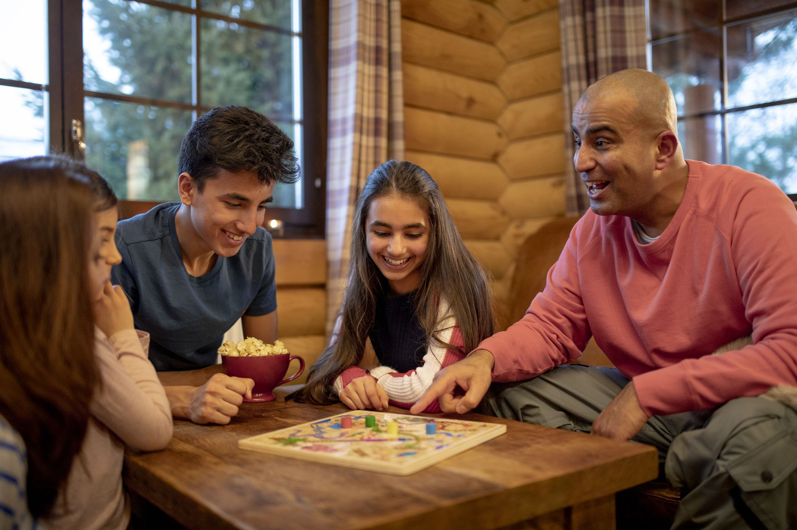
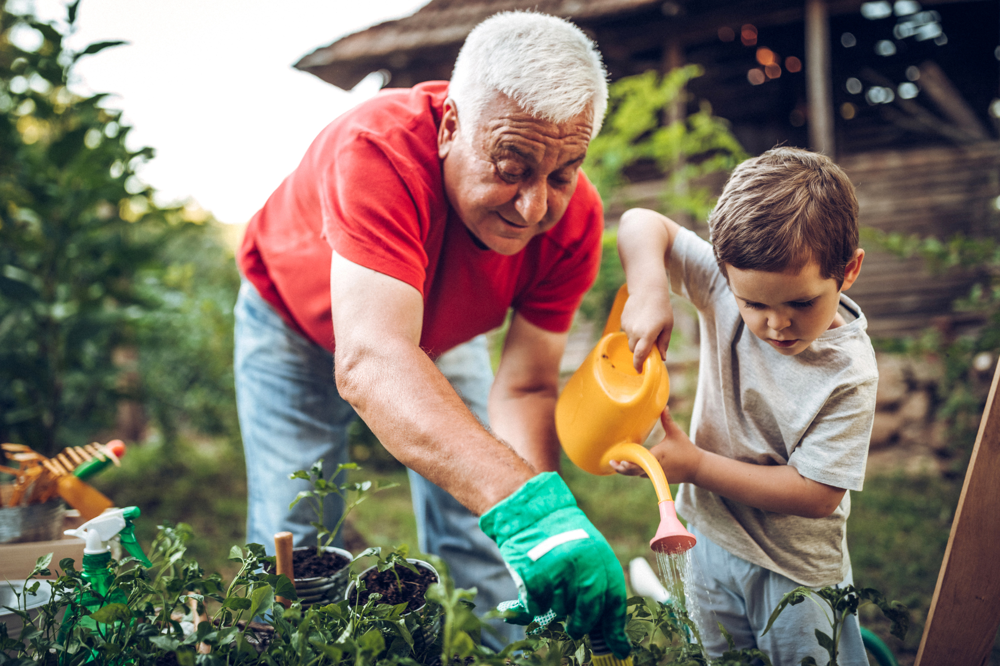

This is a challenging time for us. We hope you and your loved ones are stayins safe and healthy. The following are
some activities you can do while staying at home to get relief from axienty and overthinking.

Board games & puzzles
There’s nothing better than a challenging puzzle or good old-fashioned board game. Loved by both young and old, these are an ideal way to pass the time as a family. Sales of board games and jigsaw puzzles soared by 240% during the first official week of coronavirus lockdown in the UK according to The Guardian. Check out some great board games and puzzles here (if you’re prepared to wait for delivery).
Baking and cooking
Lockdown provides the ideal opportunity to hone your and your family’s cooking skills. Cooking is comforting, brings families together and teaches valuable life skills. Come up with theme days to create a sense of fun and excitement, collectively cook a delicious family meal, allow your children to experiment in the kitchen, and let your kids help you meal plan.

Gardening
Whether you have a garden, balcony, or backyard, gardening is an ideal activity for both parents and children. Whilst trying to minimize your trips to the grocery store, plant some herbs and vegetables that you can use in your daily cooking. Growing herbs and vegetables is also a fantastic educational opportunity for children. In addition to teaching them responsibility, gardening is an ideal activity to reduce stress, frustration and anxiety.